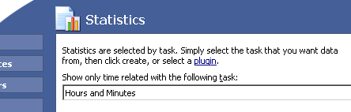

Hours and Minutes Tour
From the main window you're able to modify timing settings, modify reminders, get statistics, edit the major log, edit tasks - and more!

Remember: If you ever need any help, press the F1 button on your keyboard!
<< Back
Next >>